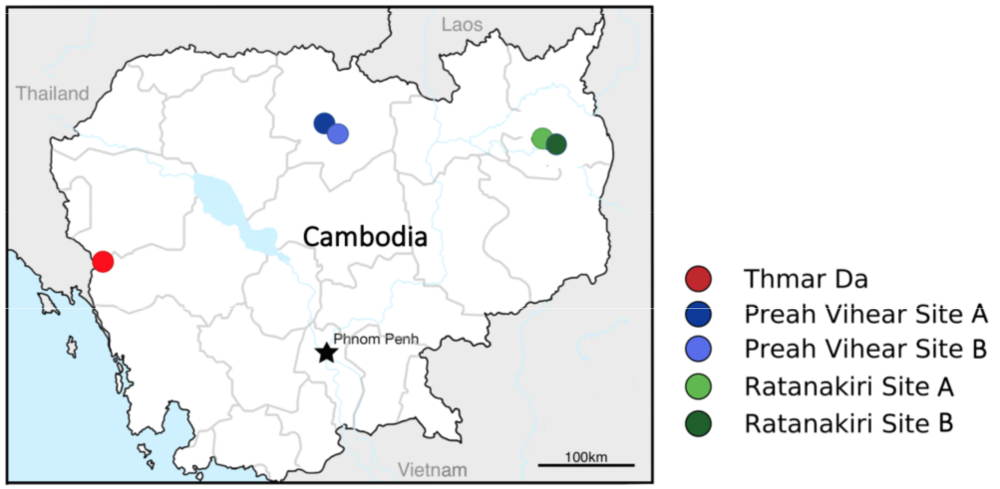

Amin1.0 (Vector Observatory - Asia Project Anopheles minimus Phase 1 Data Release)#
The Amin1.0: Anopheles minimus data resource resource comprises data from whole-genome sequencing of Anopheles minimus mosquitoes, which are a major vector of malaria in Southeast Asia. The mosquitoes were collected from sites in Cambodia in the context of a study of malaria vector species diversity led by Brandy St. Laurent. These data were generated as part of the MalariaGEN Vector Observatory Asian Vector Genomic Surveillance Project
Vector Observatory - Asia connects research groups that are investigating the population structure and diversity of malaria vectors in Asia. This centres on multiple vectors from the Greater Mekong Subregion in Southeast Asia, where drug-resistant malaria parasites are emerging and spreading. This research is expanding the range of mosquito species that are represented in our whole genome data.
More information about this release can be found in the data resource website.
This page provides an introduction to open data resources released as part of the first phase of the Vector Observatory-Asia Genomic Surveillance Project. These projects are known as Adir1.0 and Amin1.0 for short. We hope the data from these releases will be a valuable resource for research and surveillance of malaria vectors. This page covers the Amin1.0 Anopheles minimus data release. For more information about Adir1.0, please head to the Adir1.0 data resource website.
If you have any questions about this guide or how to use the data, please start a new discussion on the malariagen/vector-open-data repo on GitHub. If you find any bugs, please raise an issue.
Citation and terms of use#
Data from Amin1.0 are released openly and can be downloaded and analysed for any purpose. If you use these data as part of a publication, please cite the following paper:
Citation
Brandyce St. Laurent et al. (2021) Population genomics reveal distinct and diverging populations of An. minimus in Cambodia – a widespread malaria vector in Southeast Asia. bioRxiv. https://doi.org/10.1101/2021.11.11.468219
Partner studies and population sampling#
Amin1.0 includes data from 302 individual mosquitoes. Mosquito specimens sequenced for this data resource came from three separate field studies in Cambodia, led by Brandy St. Laurent, in collaboration with the National Center for Parasitology, Entomology and Malaria Control (CNM), Cambodia, and the NIH NIAID Laboratory of Malaria and Vector Research, USA.
Mosquito collections were carried out in 2010 in Thmar Da; a longitudinal collection over 2014 at two sites in each of Pursat, Preah Vihear, and Ratanakiri provinces; and quarterly collections over 2016 at one site each in Pursat and Preah Vihear province, Cambodia. Multiple Anopheles species were collected in each of these studies, including the An. minimus s.s. specimens that have been included in this data resource. Field specimens were stored in 1.5 ml tubes with silica gel dessicant. DNA was extracted using either Nextec plates or a CTAB DNA extraction method. GPS coordinates for collections are available in the sample metadata.
{kind=link}
| year | 2010 | 2011 | 2014 | 2015 | 2016 | ||
|---|---|---|---|---|---|---|---|
| longitude | latitude | location | |||||
| 102.735 | 12.155 | Thmar Da | 26 | 15 | 0 | 0 | 0 |
| 104.92 | 13.77 | Chean Mok | 0 | 0 | 66 | 9 | 0 |
| 104.982 | 13.667 | Preah Kleang | 0 | 0 | 47 | 9 | 36 |
| 106.995 | 13.595 | Chamkar San | 0 | 0 | 40 | 11 | 0 |
| 107.025 | 13.548 | Sayas | 0 | 0 | 39 | 4 | 0 |
Whole-genome sequencing and variant calling#
All samples in Amin1.0 have been sequenced individually to high coverage using Illumina technology at the Wellcome Sanger Institute. These sequence data have then been analysed to identify genetic variants such as single nucleotide polymorphisms (SNPs). After variant calling, both the samples and the variants have been through a range of quality control analyses, to ensure the data are of high quality. Both the raw sequence data and the curated variant calls are openly available for download and analysis.
For further information about the sequencing and variant calling methods used, please see please see St. Laurent et al. (2021).
Data hosting#
All data in Amin1.0 are available from Google Cloud Storage (GCS).
The SNP calls can be analysed directly within the cloud without having to download or copy any data, via free interactive computing services such as Google Colab. For more information, see the cloud data access guide.
Sequence read alignments and SNP calls can also be downloaded from GCS for analysis locally. For more information, see the data download guide.
Further reading#
If you would like to start working with the Amin1.0 data, please visit the cloud data access guide or the data download guide or continue browsing the other documentation on this site.
For further information about the dataset and results of population genetic analyses, please see St. Laurent et al. (2021).